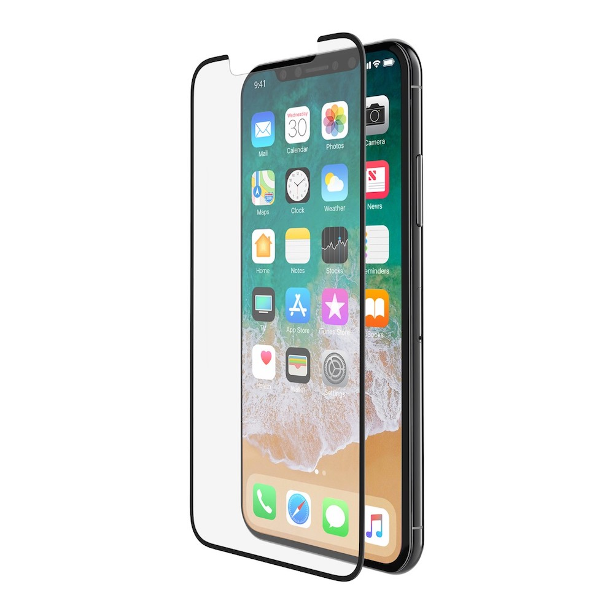
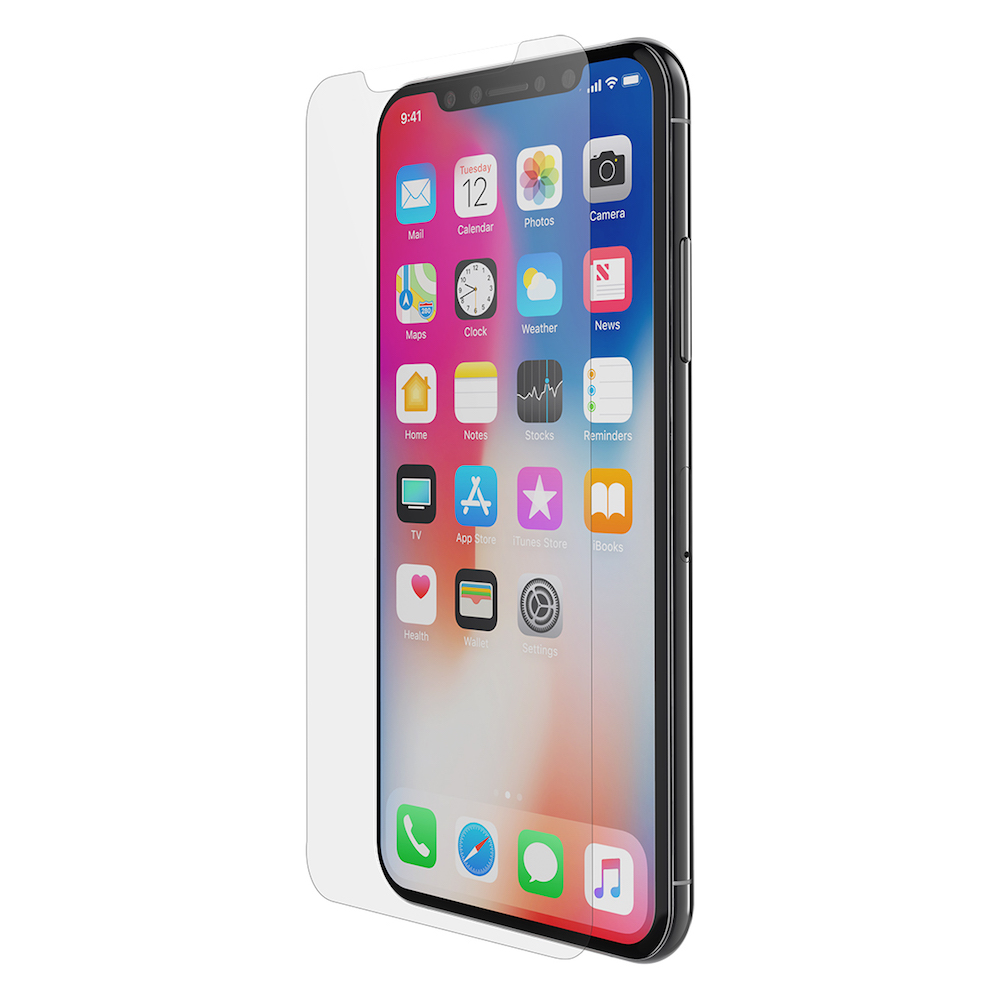

Aunque parece evidente que la diferencia de precio viene dada por la calidad, es una pregunta que muchos se han hecho en alguna ocasión. La calidad, la resistencia, el acabado y la sensación que transmiten a la hora de usar tu iPhone son algunos de los motivos por los cuales existen protectores de pantalla "premium", y una de las marcas que mejores productos de este tipo ofrecen es, sin duda, Belkin. Belkin viene fabricando protectores de pantalla desde los primeros modelos de iPhone, y hoy en día cuenta con una gama para todos los modelos actuales ofreciendo 4 soluciones que queremos explicarte para que descubras cuál es la que mejor se adapta a tus necesidades.
El clásico cristal templado del que habrás oido hablar en alguna ocasión. Está fabricado en un material que es tres veces más fuerte que el plástico y más robusto que el cristal ordinario. Este cristal templado proporciona una protección sólida para la pantalla de tu iPhone manteniendo todas las cualidades de deslizamiento de la pantalla.
Los cristales modelo Tempered Glass pasan pruebas exhaustivas que proporcionan la claridad, luminosidad y nitidez que necesitas a la hora de usar tu iPhone. Además, este tipo de cristal templado facilitan una instalación sencilla y precisa sin las temidas burbujas, cubriendo la pantalla perfectamente.
Este tipo de cristal consta de 4 capas:
1. Revestimiento antihuellas y antirrasguños que ha pasado pruebas de resistencia contra un lápiz de dureza 9H.
2. El adhesivo transparente vincula el cristal a la base.
3. La capa base proporciona un búfer entre el cristal y la pantalla.
4. El adhesivo líquido previene los huecos para minimizar los desplazamientos.
El resultado convierte a los cristales InvisiGlass en una protección de pantalla transparente que preserva la pantalla contra cualquier daño, al mismo tiempo que te proporciona una fantástica experiencia de uso. Están fabricados en cristal flexible 100 % auténtico y diseñados con una graduación de dureza de 9H, lo que significa que está tan solo un nivel por debajo del diamante.
El protector de pantalla InvisiGlass está diseñado con la tecnología FluidFlex, una característica que le proporciona elasticidad. No, sabemos que no necesitas doblar tu iPhone ;-) pero agradecerás que este tipo de protector tenga esta característica que permite absorber la sacudida provocada por un impacto sin romperse.
La protección de pantalla TemperedCurve de Belkin para iPhone ofrece una protección a un nivel superior. Este tipo de protector hace uso de una nueva forma curva en los laterales para abarcar una superficie mayor de pantalla, sin limitar en absoluto la experiencia táctil de la misma. De esta forma queda cubierta prácticamente la totalidad de la pantalla. Además, la composición del cristal confiere al protector una gran respuesta táctil, idéntica a la de tu iPhone, además del revestimiento antihuellas que ayuda a mantener la pantalla limpia y nítida.
InvisiGlass Ultra es una solución fabricada por Belkin y Corning® Incorporated que utiliza el conocido Accesory Glass 2 by Corning (sí, el fabricante del famoso Corning Glass del que habrás oido hablar en más de una ocasión), material que ofrece una resistencia superior contra los arañazos y reduce la visibilidad de las marcas o rasguños sobre el protector.
